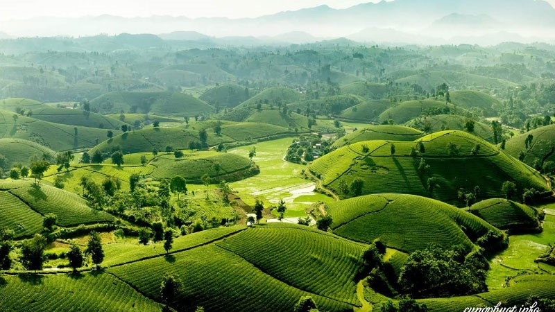
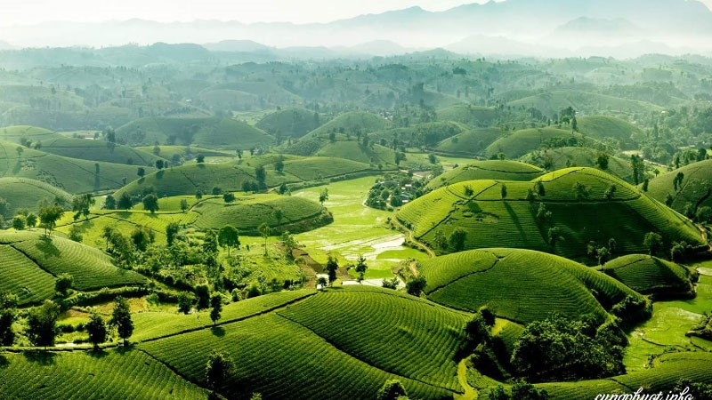

- 1. Đền Hùng
- 2. Đền Tam Giang và Chùa Đại Bi
- 3. Đầm Ao Châu
- 4. Đền Quốc Mẫu Âu Cơ
- 5. Vườn Quốc gia Xuân Sơn
- 6. Đồi chè Long Cốc
- 7. Công viên Văn Lang
- 8. Đảo Ngọc Xanh
Tóm tắt ngắn
Đền Hùng
Đền Hùng là một quần thể du lịch đền chùa nổi tiếng gần xa ở Phú Thọ, được xem là nơi hội tụ những tinh hoa và đặc sắc của dân tộc. Khi đến với Đền Hùng vào dịp Giỗ tổ hàng năm, bạn sẽ được hòa mình vào không khí rộn ràng, náo nhiệt của lễ dâng hương ở đây.
Đền Tam Giang và Chùa Đại Bi
Đền Tam Giang - Chùa Đại Bi nằm ở tả ngạn, là nơi hợp lưu của ba dòng sông: Sông Hồng, sông Lô và sông Đà. Đến với nơi đây vào đúng các dịp lễ, bạn sẽ được thưởng thức những hình thức diễn xướng dân gian và đa dạng các hình thức của tín ngưỡng thờ Mẫu. Vậy nên đừng nên bỏ qua địa điểm này khi đến Phú Thọ bạn nhé.
Đầm Ao Châu
Đầm Ao Châu Phú Thọ sở hữu diện tích khoảng 300ha với khoảng 100 hòn đảo lớn nhỏ trải khắp mặt hồ. Đến với nơi đây, bạn sẽ có cho mình vô vàn những bức ảnh đẹp cùng với việc được trải nghiệm các hoạt động thú vị như câu cá, hái vải, chèo thuyền,...

Đền Quốc Mẫu Âu Cơ
Đền Mẫu Âu Cơ sở hữu các kết cấu kiến trúc đền chùa cổ được làm gỗ với nhiều chi tiết chạm khắc đẹp, mang đậm phong cách thời Nguyễn. Bên trong đền có với nhiều bức tượng quý cùng các cổ vật vô giá. Mỗi năm, từ ngày mùng 8 đến mùng 10 tháng 3, nơi đây đều diễn ra lễ hội đền Quốc Mẫu Âu Cơ vô cùng náo nhiệt.
Vườn Quốc gia Xuân Sơn
Vườn Quốc gia Xuân Sơn là khu du lịch sinh thái với các dãy núi đá vôi cùng rừng cây xanh thẳm và các hang động tự nhiên. Đến với nơi này bạn sẽ được đắm mình vào thiên nhiên hoang sơ, xanh ngát, thoáng đãng và vô cùng mát mẻ.
Đồi chè Long Cốc
Đồi chè Long Cốc sở hữu không khí trong lành, mát mẻ cùng không gian yên bình, mộc mạc. Bạn sẽ được hòa mình vào khí trời thoang thoảng vị thơm thơm, chát chát đặc trưng khi đến với đồi chè Long Cốc nha.

Công viên Văn Lang
Công viên Văn Lang là nơi hội tụ các biểu tượng độc đáo từ thời vua Hùng và đã đạt được giải kiến trúc Quốc gia vào năm 2000. Nơi đây đặc biệt đẹp hơn về đêm nhờ các ánh đèn được lắp đặt ở khắp công viên. Nếu có dịp đến Phú Thọ, đừng nên bỏ lỡ địa điểm đẹp đẽ này bạn nha.


ĐẢO NGỌC XANH
Đảo Ngọc Xanh có diện tích khoảng 65 hecta với tổng thể du lịch sinh thái hấp dẫn. Mở cửa bắt đầu từ 7h đến 19h từ thứ 2 đến chủ nhật với nhiều hoạt động bổ ích. Nơi đây có mạch nước khoáng nóng tự nhiên chảy bên dưới, sau được con người khai thác và xây dựng. Muốn khám phá hết nơi đây một cách thuận lợi nhất nên chọn trang phục thể thao dễ di chuyển như giày thể thao, áo phông, quần short hoặc dép để đi tắm.